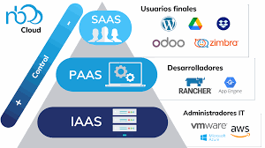

Pestaña 1: Conceptos e Imagenes
¿Qué es Cloud Computing?
El cloud computing es la entrega de servicios informáticos (como servidores, almacenamiento, software y análisis) a través de Internet, a menudo llamada "la nube". En lugar de poseer y administrar su propia infraestructura física, las organizaciones pueden acceder a estos recursos bajo demanda, pagando solo por lo que usan, lo que ofrece flexibilidad, escalabilidad y costos operativos reducidos.
|
¿Qué es SaaS, PaaS e IaaS?
SaaS, PaaS e IaaS son los tres principales modelos de servicios en la nube que difieren en el nivel de control y la gestión que ofrecen: SaaS (Software como Servicio) proporciona aplicaciones completas listas para usar, PaaS (Plataforma como Servicio) ofrece un entorno para desarrollar y desplegar aplicaciones, e IaaS (Infraestructura como Servicio) brinda recursos básicos como servidores y almacenamiento.
¿Qué es Virtualización?
La virtualización es la creación de versiones simuladas de recursos físicos de computación, como servidores, almacenamiento, redes o sistemas operativos, usando software para ejecutar múltiples entornos virtuales en una única máquina física. Esto permite a las empresas usar sus recursos de hardware de manera más eficiente, ya que un solo servidor puede ejecutar múltiples sistemas operativos o aplicaciones de forma aislada, optimizando así el rendimiento y reduciendo costos.
.jpg)
¿Qué es Docker?
Docker es una plataforma de código abierto que utiliza contenedores para crear, implementar y ejecutar aplicaciones de manera rápida y estandarizada. Los contenedores empaquetan una aplicación con todo lo que necesita para ejecutarse (código, bibliotecas y dependencias), creando un entorno aislado que funciona de la misma forma sin importar dónde se ejecute, ya sea en una máquina local o en la nube.

.png)
.png)